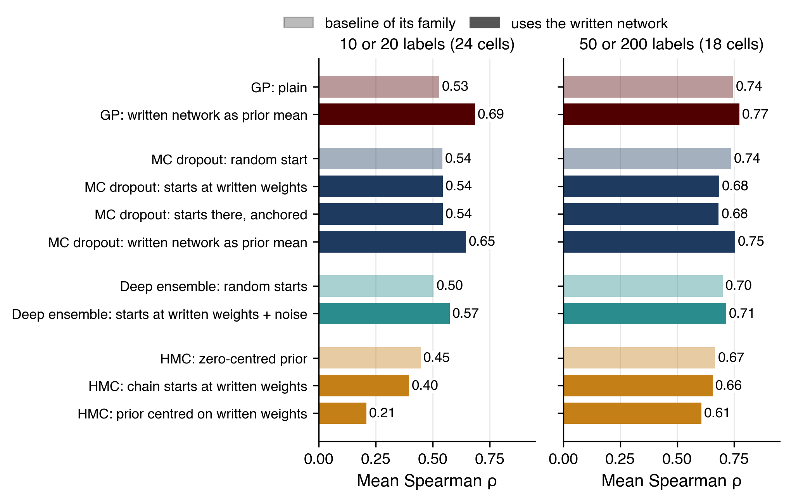

MATERIALS SCIENCE & ENGINEERING
TEXAS A&M UNIVERSITY
Department of Materials Science and Engineering
44

ρ at 10 or 20 labels
GP: 0.53 → 0.69 (prior mean)
MC dropout: 0.54 → 0.65
ensemble start: 0.50 → 0.57
HMC start: 0.45 → 0.40
HMC weight prior: 0.21